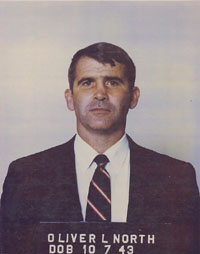
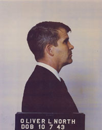

- home - 911 Open Letters -
~
Honorable Chair, Judiciary Committee, Montana House of Representatives
The Persistence of Pardonable Criminals

This photograph is found at George Washington University's National Security Archives website:
http://www.gwu.edu/~nsarchiv/NSAEBB/NSAEBB113/
At the site linked above we find Oliver North's diary-excerpts. Do his diaries reveal that Mr. North was cognizant of some of the aircraft used by CIA/DEA to import cocaine into the United States of America as part of what we call today the “Iran-Contra” scandal and the “Mena (Arkansas)” scandal? I think they do.
~
Honorable Chair, Judiciary Committee, Montana House of Representatives,
Picking up from the previous letter, I’d like to note that in the World War II era, during which Generalissimo Chiang Kai-shek was the military protector of the Chinese Green Gang’s black market opium industry, the Green Gang supported Chiang Kai-shek’s military, and Chiang's military supported his facade of Chinese leadership while at the same time supporting and protecting the Green Gang's opium-distribution operations. Chiang Kai-shek's leadership and the Green Gang's opium business were interdependent.
The Green Gang’s roots in opium are known to trace back to British opium smuggling in the early 1800s. British importation of opium into China, as a facet of British “foreign policy”, was the 'politics of money' merging with the 'money of politics'.
But the singular truth is that British Policy had created culturally and socially the segmented fracture of ancient Chinese legacy, as opium addicts dropped from society’s active areas and absented themselves from traditional familial and community roles.
This problem was understood finally by Chinese authorities and opium-importation via British shipping was officially denounced, and the British, under Lord Palmerston, forced the Opium Wars on China to continue British 'rights' to trade at Canton and Shanghai, plus other Ports of Entry granted to the British after England won the Opium Wars, and that established finally a perpetual opium market inside China.
It was from the British hierarchy of distribution systems inside China that the Green Gang, the opium syndicate which would later become one of Chiang Kai-shek’s largest financial backers, came to power in the opium industry, and it was that thusly-structured underworld network of national, regional, and local distribution operatives which produced the infrastructure of Asian opium-market management in the hands of government.
This is the background from which our current CIA has derived its habit of drug production, drug distribution, and drug-money laundering operations. The precedent is in the British Empire's opium-smuggling operations, in British national Foreign Policy. While it strikes us as unsavory to have to admit this on the part of our English forebears, it is known history. England turned its Navy in war against China to force China to take the opium. Some Tory 'Houses' made it a part of our history here in America, as we shall see.
But to put the Green Gang’s presence and influence in mid-20th Century international politics into perspective, we must go back to those days in which China was resisting England’s opium importation, the days when British bankers engaged the New England Tory families in the chase, increasing those families' wealth in the process. As the Green Gang in China had come from ‘secret societies’, even so the Ivy League’s ‘secret societies’ would prove to foster a great crime syndicate with a very remarkable plan toward world ownership for the British Empire.
Key in that secret goal would be the secret
society at Yale University named 'Skull and Bones', the call name for
the Russell Trust Association. Let’s look to Anton Chaitkin and Webster G.
Tarpley for some footage on that:
~
Begin quoted passages from Anton Chaitkin and Webster Tarpley in their book,
George Bush: The Unauthorized Biography, 1, reading in Chapter 7:
But the Russells were protected as part of the multiply-intermarried grouping of
families then ruling Connecticut. The blood-proud members of the Russell, Pierpont, Edwards, Burr,
Griswold, Day, Alsop and Hubbard families were prominent in the pro-British
party within the state. [Tories] Many of their sons would be among the members
chosen for the Skull and Bones Society over the years.
The background to Skull and Bones is a story of Opium and Empire, and a bitter
struggle for political control over the new U.S. Republic.
Samuel Russell, second cousin to Bones founder William H. [Russell], established
Russell and Company in 1823. Its business was to acquire opium from Turkey and
smuggle it into China, where it was strictly prohibited, under the
armed protection of the British Empire.
The prior, predominant American gang in this field had been the syndicate
created by Thomas Handasyd Perkins of Newburyport, Massachusetts, an aggregation
of the self-styled “blue bloods” or Brahmins of Boston’s north shore. Forced
out of the lucrative African slave trade by U.S. Law and Caribbean slave
revolts, leaders of the Cabot, Lowell, Higginson, Forbes, Cushing and Sturgis
families had married Perkins siblings and children. The Perkins opium syndicate
made the fortune and established the power of these families. By the 1830s, the Russells had bought
out the Perkins syndicate and made Connecticut the primary center of the U.S.
Opium racket. Massachusetts families (Coolidge, Sturgis, Forbes and
Delano) joined Connecticut (Alsop) and New York (Low) smuggler-millionaires under the Russell auspices.
Certain of the prominent Boston opium families, such as Cabot and Weld, did not
affiliate directly with Russell, Connecticut and Yale, but were identified
instead with Harvard.
John Quincy Adams and other patriots had fought these men for a quarter century
by the time the Russell Trust Association was set up with its open pirate
emblem--Skull and Bones.
With British ties of family, shipping and merchant banking, the old New England
Tories had continued their hostility to American independence after the
Revolutionary War of 1775-83. These pretended conservative patriots proclaimed
Thomas Jefferson’s 1801 presidential inauguration “radical usurpation.”
The Massachusetts Tories (“Essex Junto”) joined with Vice President Aaron Burr,
Jr. (a member of the Connecticut Edwards and Pierpont families) and Burr’s
cousin and law partner Theodore Dwight, in political moves designed to break up
the United States and return it to British allegiance.
The U.S. Nationalist leader, former Treasury Secretary Alexander Hamilton,
exposed the plan in 1804. Burr shot him to death in a duel, then led a famous
abortive conspiracy to form a new empire in the Southwest, with territory to be
torn from the U.S.A. and Spanish Mexico. For the ‘blue bloods’, the romantic figure of Aaron Burr was ever afterwards the symbol of British feudal
revenge against the American republic.
The Connecticut Tory families hosted the infamous Hartford Convention in 1815,
toward the end of the second war between the U.S. and Britain (the War of 1812).
Their secessionist propaganda was rendered impotent by America’s defensive
military victory. This faction then retired from the open political arena, pursuing instead entirely private and covert alliances with the
British Empire. The incestuously intermarried Massachusetts and Connecticut
families associated themselves with the British East India Company in the
criminal opium traffic into China. These families made increased profits as
partners and surrogates for the British during the bloody 1839-42 Opium War, the
race war of British forces against Chinese defenders. (snip)
The following gentlemen were among Russells’ partners:
Augustine Heard (1785-1868): ship captain and pioneer U.S. Opium smuggler.
John Cleve Green (1800-75): married to Sarah Griswold; gave a fortune in opium
profits to Princeton University, financing three Princeton buildings and four
professorships; trustee of Princeton Theological Seminary for 25 years.
Abiel Abbott Low (1811-93): his opium fortune financed the construction of the
Columbia University New York City campus; father of Columbia’s president Seth
Low.
John Murray Forbes (1813-98): his opium millions financed the career of author
Ralph Waldo Emerson, who married Forbes’s daughter, and bankrolled the
establishment of the Bell Telephone Company, whose first president was Forbes’s
son.
Joseph Coolidge: his Augustine Heard agency got $10 million yearly as surrogates
for the Scottish dope-runners “Jardine Matheson” during the fighting in China;
his son organized the United Fruit Company; his grandson, Archibald Cary
Coolidge, was the founding executive officer of the Anglo-Americans’ Council on
Foreign Relations (CFR).
Warren Delano, Jr.: chief of Russell and Co. in Canton; grandfather of U.S.
President Franklin Delano Roosevelt.
Russell Sturgis: his grandson by the same name was chairman of the Baring Bank
in England, financiers of the Far East opium trade.
Such persons as John C. Green and A.A. Low, whose names adorn various buildings
at Princeton and Columbia Universities, made little attempt to hide the criminal
origin of their influential money. Similarly with the Cabots, the Higginsons and
the Welds for Harvard. The secret groups at other colleges are analogous and
closely related to Yale’s Skull and Bones.
End excerpt from Chapter 7 in “George Bush: The Unauthorized Biography”;
Chaitkin and Tarpley.
~
So we understand that some of the New England Tories had a cozy relationship
with the Throne across the waters from whence we came. And we see that while
making the fortunes with the early 1800s British opium smuggling industry, these
families contributed nicely to our finer educational institutions, earning
perhaps some leverage and considerable prestige in the bargain. From the Ivy
League campuses the descendant Tory elite, many of whom are to this
day loyalists to the British Empire, have been shepherded into positions of
power on Wall Street and in Washington DC as well. I would like to maintain as
part of my position on things that this curious aspect of mostly unsung American
history leads us to an interesting perspective on the hierarchy of power and
authority in our nation's government today.
I have included this snippet by Dr. Dennis L. Cuddy, whose archives are at Devvy Kidd's website (newswithviews dot com) in a later letter to the Committee, but it shall also fit in well right herel, so I will offer now a passage from Dr. Cuddy as he quoted Rush Limbaugh:
“Popular
national radio talk-show host Rush Limbaugh repeatedly refers to anyone who
believes in a one-world government conspiracy involving the Council on Foreign
Relations (CFR) as a "kook." However, on his February 7, 1995 program, he
remarked: "You see, if you amount to anything in Washington these days, it is
because you have been plucked or handpicked from an Ivy League school – Harvard,
Yale, Kennedy School of Government – you've shown an aptitude to be a good Ivy
League type, and so you're plucked so to speak, and you are assigned success.
You are assigned a certain role in government somewhere, and then your success
is monitored and tracked, and you go where the pluckers and the handpickers can
put you." ~ (
http://newswithviews.com/Cuddy/dennis2.htm )
In just the manner which Professor Carroll Quigley and Senator Fulbright tapped
a young Bill Clinton to be a Rhodes Scholar, we see a subjective view of an
objective over-view - we see how it's done, and how it's been done since the
days of our American Revolution. But of course we've always known how
it's done. What we have not considered much is by whom it's done. Now we may
begin to see that among other businessmen and academics and governmental
officials who had some sense of human decency about themselves, there has
existed since the earliest days of our nation a cabal of inter-marrying
anti-American elitists who in the early 1800s subscribed to the easy profits
England paid for smuggling and later in the century subscribed to the Rhodes
vision of a one-world government ruled by the British Empire.
That sort of immoral treason has thrived in secrecy within the shadowy halls of secret societies - and through those secret societies it has survived within the hallowed halls of American governance and the ruthless rooms of Wall Street.
A point I would like to make for your Committee is that this piece of history indicates clearly that the British government had no qualms about dealing opium on the international market at the time our newly-formed nation was in its infancy. Britain had lost the incoming taxes from the Colonies with Washington's Revolution. The British government’s chief financiers, such as the Baring Bank and later the Rothschilds and their friends from Germany and Holland, the Warburgs, (and a few others, like the Schiffs), and the silent owners of the Bank of England, were as involved in British Policy as was the Throne.
Once we see that as not just another piece of dry history, but instead see it as a precedent, we may say that we have established by actual history an accounting of how and why one of the world's most historically-laden Empires, the British Empire itself, employed opium-smuggling as a viable aspect of its “Foreign Policy” - and that is officially undeniable. It is a precedent, as history's Opium Wars make clear. In such awareness we find now that we may assume a basis in the heritage of British aristocracy, an acquiescence in the hearts and minds of our forebears, those who bore the good King's English language to these shores and lodged that tongue from Christian hearts into the roots of our civilization as Americans, in all of that we see the fact of official governmental opium-smuggling.
And to our forebears on the whole, I prefer to imagine that their government appeared, on the surface, to be far too noble to involve itself with international opium smuggling. I doubt that the common English citizen gave much thought to such policy, if it was even generally known, in the early-to-mid-1800s. Further, I'm thinking that had the tale been spread about the countryside, saying that the British government was dealing massive quantities of opium into a foreign nation, most Englishmen of the day would have disbelieved it, just as Americans today disbelieve that their governmental mechanism itself arranges the production of illegal drugs and then supervises the transportation of, marketing of, distribution of, and money-laundering of, the vast majority of this planet's gross illegal drug trade.
The logistical problem required of moving the tonnage required to sustain government-stated consumption figures has only one possible hierarchy and world-wide top-secret transportation system in place, and that system exists and functions within what I call the “shadow government”, a powerful make-shift government hidden within our own secretive government. We shall look more closely into that in coming letters to the Committee.
I am laboring, perhaps too much so, to establish the fact of precedent. Our government derived from British government, and our government deals drugs just as the British government dealt drugs in the 1800s. What our CIA and other Intelligence services do today has already been done by the government from which we revolted long ago. England's government has established the precedent. Were it not for that precedent, I should fail to establish my intuitions into a graspable presentation worthy of your Committee's time. But my case becomes more easily revealed when we recall that British Intelligence trained our OSS (Office of Strategic Services - the precursor to the CIA) during World War II.
What we are going to discover is that between one-half trillion dollars and one trillion dollars per year are laundered into and through the Wall Street economy and its satellite interfaces with offshore banking activities, with the help of governmental agencies and the Central Intelligence Agency.
I mention that at this point because just as the opium smuggling of the 1800s required hierarchies of authority and power and business systems in order to exist on such a massive scale, so too today we’ll find that an infra-structure of command and accountability has to exist, and it has to utilize an organized hierarchy of control in order to make possible the sheer tonnage of illegal drugs entering this country.
U.S. Military transportation systems in the
control of the CIA and classified-secret shipping documents, confidential
bills-of-lading, coupled with multi-level offshore banking shifts and
proprietary operations, comprise the only logistics organization on earth which
could be capable of moving the sheer tonnage of illegal drugs which this
planet's billions of consumers buy and pay for, in cash, each month. This was
learned by the very people who were trained by British Intelligence prior to and
during World War II, the OSS, and the experiential
furnisher of the substantial core of the newly-formed CIA in the late 1940s. Our
CIA was trained and advised by British Intelligence. MI6 and CIA walk hand in
hand to this day.
Without the government's apparatus in place, without the apparatus and
infrastructure, the drug problem in the United States could not exist. Without
the government's “War on Drugs”, this market could not exist. And without the
drugs being brought into America, the War on Drugs would dry up and go away,
leaving many thousands of law enforcement officers, such as those employed at
the DEA, with little or nothing to do.
The reason I am mentioning
that at this time has to do with
from whence almost all of our present woes, symbolized in part by this madness
about a national ID card, are coming to the American people and to Montanans.
I will be bringing this item below back to our attention much later in my
letters to you, but for the moment, let us notice closely now a memo from the
Attorney General of the United States to the Director of Central Intelligence
under Ronald Reagan:
~
Office of the Attorney General
Washington DC 205[SE]
February 11, 1982
Honorable William J. Casey
Director
Central Intelligence Agency
Washington DC 20505
Dear Bill,
Thank you for your letter regarding the procedures governing
the reporting and use of information concerning federal crimes.
I have reviewed the draft of the procedures that accompanied
your letter and, in particular, the minor changes made in the
draft that I had previously sent to you. These proposed changes
are acceptable and, therefore, I have signed the procedures.
I have been advised that a question arose regarding the need to
add narcotics violations to the list of reportable non-employee
crimes (Section IV). 21 U.S.C. S874 (h) provides that “When
requested by the Attorney General it shall be the duty of any
agency of instrumentality of the Federal Government to furnish
assistance to him for carrying out his functions under [the
Controlled Substances Act]...” Section 1.8 (b) of Executive
Order 12333 tasks the Central Intelligence Agency to “collect,
produce, and disseminate intelligence on foreign aspects of
narcotics production and trafficking.” Moreover, authorization
for the dissemination of information concerning narcotics
violations to law enforcement agencies, including the
Department of Justice, is provided by sections 2.3 (c) and (j)
and 2.6 (b) of the Order. In light of these provisions, and in
view of the fine cooperation the Drug Enforcement
Administration has received from CIA, no formal requirement
regarding the reporting of narcotics violations has been
included in these procedures. We look forward to the CIA’s
continuing cooperation with the Department of Justice in this
area.
In view of our agreement regarding the procedures, I have
instructed my Counsel for Intelligence Policy to circulate a
copy which I have executed to each of the other agencies
covered by the procedures in order that they may be signed by
the head of each such agency.
Sincerely
William French Smith
Attorney General
(end DOJ memo to CIA. The original copy of the document is on the CIA's website. See Notes below for excerpts from
INTELLIGENCE AUTHORIZATION ACT FOR FISCAL YEAR 1999 (House of Representatives - May 07, 1998)
~
There is one particular section of that memo which indicates that CIA need not
trouble itself to report drug dealing by its lower-ranked officers. In fact, the
“procedures” required the reporting by CIA of only Case Officers and above in
the chain of employee/non-employee hierarchy. Anyone actually assisting in drug distribution processes could be classified as “non-employees of the CIA”, even
though they continued to draw CIA paychecks while operating as “non-employees of
the CIA”. (ref: Michael C. Ruppert, in his film, “Truth And Lies Of 911”,
available here: http://www.copvcia.com )
Additionally, we notice that in the document Mr. Smith alluded to
Presidential Executive Order EO12333. That EO was signed by Reagan only
two months and one week before the above memo was dated.
The heads of the DOJ and CIA, with this intriguing memorandum, were enjoying a
bit of double-nuance duologue in typical ’Govlish’ fashion, grinning behind
Reagan’s back, just as H.W. Bush and Oliver North and Felix Rodriguez were. But
whatever we wish to place upon it cognitively, symbolically, metaphorically
- and
no matter whatever else we may wish to make of that memo, we can hold up now,
with a certain degree of plausibility, the existence of a secret ‘cabal’ or
‘inner government’ which operated out of the back door of Reagan’s White House.
The most damning evidence of this is the entire scandal surrounding the CIA's black operations at Mena, Arkansas, where known CIA/DEA drug smuggler Adler Berriman (Barry) Seal flew more than twenty tons of cocaine into that tiny western-Arkansas town on CIA/DEA aircraft which had been used to deliver illegal arms shipments to the so-called Contras in Central America.
Much documentation exists in the National Security Archives at George Washington University. Here are two links with which one may begin studies online:
http://www.gwu.edu/~nsarchiv/NSAEBB/NSAEBB2/nsaebb2.htm
At that link we find this excerpt from testimony:
http://www.gwu.edu/~nsarchiv/NSAEBB/NSAEBB2/ccc5_1.gif
We shall soon look at not only Oliver North, but also John Poindexter, General Richard Secord, Albert Hakim, Theodore Shackley, Thomas Clines, Felix Rodriguez, George Herbert Walker Bush, General John Singlaud, and other named individuals, all of whom were/are participants in the “shadow government's Intelligence arm”, the agency within the Agency, the government within the Government, that criminality which gives me fear.
~
The validation of intent as shown clearly in
the above document is in these words by Smith to the Director of Central
Intelligence under Reagan, William Casey: “In light of these provisions, and
in view of the fine cooperation the Drug Enforcement Administration has received
from CIA, no formal requirement regarding the reporting of narcotics violations
has been included in these procedures.”
That statement by the head of the Department of Justice is absolutely
remarkable.
As one former Los Angeles Police Department, DEA-trained detective, Michael C. Ruppert, has stated it: “That is black and white evidence of a conspiracy” inside seats of the people's governmental power, and as we shall see, he was correct. But again I’m getting ahead of myself. The point of this letter is to establish the facts that 1), England used New England Tory families to smuggle opium into China as a part of official British foreign policy, and that 2), those New England Tory families, loyal to the King throughout and after the American Revolution, made fortunes which they used to enhance the campuses and offices of the Ivy League, where their children prepared themselves for positions of respect and responsibility on Wall Street and in Washington DC.
A third point of note is that the British opium
business has an uninterrupted traceable lineage of connectivity to the CIA's
present role in international and domestic illegal drug-smuggling.
Interestingly, we note that President Franklin Delano Roosevelt’s grandfather
worked for the Russell & Company, opium smugglers out of Boston, as their
Canton, China warehouse manager, their Canton Chief of Operations. Also of
interest, the son of Joseph Coolidge founded United Fruit, which later became a
Rockefeller company and, under Rockefeller ownership was the catalyst which
sparked the CIA's overthrow of the government of Guatemala in 1954. And
we likewise note that the grandson of Joseph Coolidge was involved in
the creation of the Council on Foreign Relations (CFR).
In Liberty,
Elias
~
Notes:
1) George Bush: The Unauthorized Biography
by Webster Griffin Tarpley and Anton Chaitkin; Executive Intelligence Review; Washington, D.C.; 1992.Fascimile Edition – Reprinted and copyrighted 2004 by ProgressivePress.com, an imprint of “Tree of Life Books”; P.O. Box 126; Joshua Tree, CA 92252; Second printing February 2005; ISBN: 0-930852-92-3. Original edition 1992: ISBN: k0-943235-05-7; Library of Congress Catalog Card Number: 91-78005; EIB 92-002; Executive Intelligence Review, P.O. Box 17390, Washington, D.C. 20041-0390. Note: This book is presently available online for free reading and downloading at: http://www.tarpley.net/bushb.htm
~
From this link we read the following:
http://www.pinknoiz.com/covert/MOU.html
Intelligence Authorization Act For Fiscal Year 1999
(House of Representatives - May 07, 1998)
1960
In support of the U.S. war in Vietnam, the CIA renews old and cultivates new
relations with Laotian, Burmese and Thai drug merchants, as well as corrupt
military and political leaders in Southeast Asia. Despite the dramatic rise of
heroin production, the agency's relations with these figures attracts
little attention until the early 1970s.
1967
Manuel Antonio Noriega goes on the CIA payroll. First recruited by the U.S.
Defense Intelligence Agency in 1959, Noriega becomes an invaluable asset for the
CIA when he takes charge of Panama's intelligence service after the 1968
military coup, providing services for U.S. covert operations and facilitating
the use of Panama as the center of U.S. intelligence gathering in Latin America.
In 1976, CIA Director George Bush pays Noriega $110,000 for his services, even
though as early as 1971 U.S. officials agents had evidence that he was deeply
involved in drug trafficking. Although the Carter administration suspends
payments to Noriega, he returns to the U.S. payroll when President Reagan takes
office in 1981. The general is rewarded handsomely for his services in support
of Contras forces in Nicaragua during the 1980s, collecting $200,000 from the
CIA in 1986 alone.
MAY 1970
A Christian Science Monitor correspondent reports that the CIA `is cognizant of,
if not party to, the extensive movement of opium out of Laos,' quoting one
charter pilot who claims that `opium shipments get special CIA clearance and
monitoring on their flights southward out of the country.' At the time, some
30,000 U.S. service men in Vietnam are addicted to heroin.
1972
The full story of how Cold War politics and U.S. covert operations fueled a
heroin boom in the Golden Triangle breaks when Yale University doctoral
student Alfred McCoy publishes his ground-breaking study, The Politics of Heroin
in Southeast Asia. The CIA attempts to quash the book.
1973
Thai national Puttapron Khramkhruan is arrested in connection with the seizure
of 59 pounds of opium in Chicago. A CIA informant on narcotics
trafficking in northern Thailand, he claims that agency had full knowledge of
his actions. According to the U.S. Justice Department, the CIA quashed
the case because it may `prove embarrassing because of Mr. Khramkhruans's
involvement with CIA activities in Thailand, Burma, and elsewhere.'
JUNE 1975
Mexican police, assisted by U.S. drug agents, arrest Alberto Sicilia Falcon,
whose Tijuana-based operation was reportedly generating $3.6 million a week from
the sale of cocaine and marijuana in the United States. The Cuban exile claims
he was a CIA protege, trained as part of the agency's anti-Castro efforts, and
in exchange for his help in moving weapons to certain groups in Central America,
the CIA facilitated his movement of drugs. In 1974, Sicilia's top aide, Jose
Egozi, a CIA-trained intelligence officer and Bay of Pigs veteran, reportedly
lined up agency support for a right-wing plot to overthrow the Portuguese
government. Among the top Mexican politicians, law enforcement and intelligence
officials from whom Sicilia enjoyed support was Miguel Nazar Haro, head of the
Direccion Federal de Seguridad (DFS), who the CIA admits was its `most important
source in Mexico and Central America.' When Nazar was linked to a
multi-million-dollar stolen car ring several years later, the CIA intervenes to
prevent his indictment in the United States.
APRIL 1978
Soviet-backed coup in Afghanistan sets stage for explosive growth in Southwest
Asian heroin trade. New Marxist regime undertakes vigorous anti-narcotics
campaign aimed at suppressing poppy production, triggering a revolt by
semi-autonomous tribal groups that traditionally raised opium for
export. The CIA-supported rebel Mujahedeen begins expanding production to
finance their insurgency. Between 1982 and 1989, during which time the CIA ships
billions of dollars in weapons and other aid to guerrilla forces, annual opium
production in Afghanistan increases to about 800 tons from 250 tons. By 1986,
the State Department admits that Afghanistan is `probably the world's largest
producer of opium for export' and `the poppy source for a majority of the
Southwest Asian heroin found in the United States.' U.S. officials, however,
fail to take action to curb production. Their silence not only serves to
maintain public support for the Mujahedeen, it also smooths relations with
Pakistan, whose leaders, deeply implicated in the
heroin trade, help channel CIA support to the Afghan rebels.
JUNE 1980
Despite advance knowledge, the CIA fails to halt members of the Bolivian
militaries, aided by their Argentine counterparts, from staging the so-called
`Cocaine Coup,' according to former DEA agent Michael Levine. In fact, the
25-year DEA veteran maintains the agency actively abetted cocaine
trafficking in Bolivia, where government officials who sought to combat
traffickers faced `torture and death at the hands of CIA-sponsored
paramilitary terrorists under the command of fugitive Nazi war criminal (also
protected by the CIA) Klaus Barbie.'
FEBRUARY 1985
DEA agent Enrique `Kiki' Camerena is kidnapped and murdered in Mexico. DEA, FBI
and U.S. Customs Service investigators accuse the CIA of stonewalling during
their investigation. U.S. authorities claim the CIA is more interested in
protecting its assets, including top drug trafficker and
kidnapping principal Miguel Angel Felix Gallardo. (In 1982, the DEA learned that
Felix Gallardo was moving $20 million a month through a single Bank of America
account, but it could not get the CIA to cooperate with its investigation.)
Felix Gallardo's main partner is Honduran drug lord Juan
Ramon Matta Ballesteros, who began amassing his $2-billion fortune as a cocaine
supplier to Alberto Sicilia Falcon. (see June 1985) Matta's air
transport firm, SETCO, receives $186,000 from the U.S. State Department to fly
`humanitarian supplies' to the Nicaraguan Contras from 1983 to 1985. Accusations
that the CIA protected some of Mexico's leading drug traffickers in exchange for
their financial support of the Contras are leveled by government witnesses at
the trials of Camarena's accused killers.
JANUARY 1988
Deciding that he has outlived his usefulness to the Contra cause, the Reagan
Administration approves an indictment of Noriega on drug charges. By this time,
U.S. Senate investigators had found that `the United States had received
substantial information about criminal involvement of top
Panamanian officials for nearly twenty years and done little to respond.'
APRIL 1989
The Senate Subcommittee on Terrorism, Narcotics and International
Communications, headed by Sen. John Kerry of Massachusetts, issues its
1,166-page report on drug corruption in Central America and the Caribbean. The
subcommittee found that `there was substantial evidence of drug
smuggling through the war zone on the part of individual Contras, Contra
suppliers, Contra pilots, mercenaries who worked with the Contras supporters
throughout the region.' U.S. officials, the subcommittee said, `failed to
address the drug issue for fear of jeopardizing the war efforts against
Nicaragua.' The investigation also reveals that some `senior policy makers'
believed that the use of drug money was `a perfect solution to the Contras'
funding problems.'
JANUARY 1993
Honduran businessman Eugenio Molina Osorio is arrested in Lubbock Texas for
supplying $90,000 worth of cocaine to DEA agents. Molina told judge he is
working for CIA to whom he provides political intelligence. Shortly after, a
letter from CIA headquarters is sent to the judge, and the case is dismissed. `I
guess we're all aware that they [the CIA] do business in a different way than
everybody else,' the judge notes. Molina later admits his
drug involvement was not a CIA operation, explaining that the agency protected
him because of his value as a source for political intelligence in
Honduras. [EA note: However, DEA/CIA aircraft flew in the tonnages which people
like Osorio distributed, so Osorio's “admission” was to scratch CIA's back –
after the CIA had him released. One favor deserves another.]
NOVEMBER 1996
Former head of the Venezuelan National Guard and CIA operative Gen. Ramon
Gullien Davila is indicted in Miami on charges of smuggling as much as 22 tons
of cocaine into the United States. More than a ton of cocaine was shipped into
the country with the CIA's approval as part of an undercover program aimed at
catching drug smugglers, an operation kept secret from other U.S. agencies.
[...]
Ms. WATERS. Mr. Chairman, I move to strike the requisite number of words.
Mr. Chairman, I rise to support the amendment that is being offered for a meager
5 percent cut from the intelligence budget. I rise to support it because it
makes eminently good sense.
First of all, no matter what my colleagues say, those who are opposed to this
amendment, those who can appear and rant and rave about why we should not only
support the budget but be for more money for that budget, first of all, it has
been said over and over again, the Cold War is over; the Soviet Union is no
more.
Where is this great threat to our country? Who can identify anybody in the world
who is prepared to take on the United States of America? Someone
alluded to Iran and alluded to China. Well, I can talk a lot about China. And if
we feel they are such a great threat, why are we chasing them down,
embracing them, running after them to do business with them, to be involved in
trade activities with them?
Let me tell my colleagues where the threat is. The real war that is being waged
on America today is the drug war. Where is our great intelligence to
tell us who the drug lords are and how they manage to continue day in and day
out, week in and week out, to dump tons of drugs into this Nation that
finds its way into our cities and our rural communities, addicting our children,
creating more crimes, with people who get addicted and are looking
for ways to support those habits.
Why cannot this intelligence community tell us who these drug lords are? Why is
it these cartels can continue to operate without any interference? It is
so embarrassing to have our own Drug Czar go down to Mexico and wrap his arms
around General Gutierrez Rebollo. And just a few days after he is down there
talking about how great he is, this is our own drug czar, the drug czar was
busted because he is connected to the Juarez cartel.
Now, our Drug Czar was in the service. He is a general. He knows about the DIA,
the CIA, and everybody else. But he goes down there, wraps his arms around him,
talks about how great he is, he has known him for years; and he is the dope
dealer. He is the one that is connected to the drug cartel. This is outrageous.
It is embarrassing.
And do not tell me how good the intelligence community is. It does not matter
whether we are talking about Mexico or Peru or Colombia. Why cannot our
intelligence community tell us about the heads of government and the leadership
of those countries who are involved in trafficking drugs, at the same time we
are giving support to them, we are showing up with them in every kind of
cockamamie scheme, talking about we are helping to eliminate drugs, when the
fact of the matter is, it is getting worse.
If this intelligence community was about the business of dealing with any war,
it would be the war on drugs. That is the war that is being waged on
America. I am sick and tired of hearing that we cannot streamline, we cannot
cut, we cannot do anything about the intelligence community. And there are those
who just romanticize the intelligence community, those who think we cannot ask
any questions, we cannot cut them, we cannot dare challenge them.
It is outdated, long overdue for cuts and being streamlined. And yet we come to
the floor, person after person, talking about how great it is, how we
should continue to support it. Well, my colleagues know that I have been
involved in this drug war for a long time, and they understand that the number
one priority of the Congressional Black Caucus is to get rid of drugs in our
society. We do not have any help from the CIA. As a matter of fact, we are still
investigating the CIA and their involvement in drug trafficking.
As my colleagues know, we just had a hearing, and I would like to thank our
ranking member for embracing some of the ideas that I have, and in that
hearing we are investigating what was the CIA doing when all the drugs were
being trafficked in South Central Los Angeles and profits were going to fund the
contras? Where were they?
Well, I will tell my colleagues where they were. They were at the same place
they were when they were in Southeast Asia, turning their backs on drug
trafficking, even being involved in it, to have additional money. They like
slush funds. It is not enough that we give them over $30 billion in this
intelligence community.
If we want an intelligence operation that is dealing with the real war, turn
their attention to the drug war and maybe we will want to support them in
the future.
[...]
The gentlewoman from California (Ms. Waters) is recognized for 5 minutes.
Ms. WATERS. Mr. Chairman, this amendment would call for a review of the
1995 memorandum of understanding that currently exists between the Director of
Central Intelligence and the intelligence community and the Department of
Justice regarding reporting of information concerning Federal crimes.
This amendment is very simple and noncontroversial. It calls for a review of the
current memorandum of understanding to ensure that drug trafficking and drug law
violations by anybody in the intelligence community is reported to the
Department of Justice. Specifically, the review would examine any
requirements for intelligence employees to report to the Director of Central
Intelligence and any requirements for the Director to report this
information to agencies.
This information would be reported to the Attorney General. The review would be
published publicly. This simple amendment fits well with the recent calls for a
reinvigorated war on drugs. The need for this amendment, however, cannot be
understated.
One of the most important things that came out of the hearing of the House
Permanent Select Committee on Intelligence was an understanding about why we did
not know about who was trafficking in drugs as we began to investigate and take
a look at the allegations that were being made about the CIA's involvement in
drug trafficking in south central Los Angeles and the allegations that profits
from that drug trafficking were going to support the
Contras.
We discovered that for 13 years the CIA and the Department of Justice followed a
memorandum of understanding that explicitly exempted the
requirement to report drug law violations by CIA non-employees to the Department
of Justice. This allowed some of the biggest drug lords in the
world to operate without fear that the CIA would be required to report the
activity to the DEA and other law enforcement agencies. [emphasis mine]
In 1982, the Attorney General and the Director of Central Intelligence entered
into an agreement that excluded the reporting of narcotics and drug
crimes by the CIA to the Justice Department. Under this agreement, there was no
requirement to report information of drug trafficking and drug law
violations with respect to CIA agents, assets, non-staff employees and
contractors. This remarkable and secret agreement was enforced from February
1982 to August of 1995. This covers nearly the entire period of U.S. involvement
in the Contra war in Nicaragua and the deep U.S. involvement in the
counterinsurgency activities in El Salvador and Central America.
Senator Kerry and his Senate investigation found drug traffickers had used the
Contra war and ties to the Contra leadership to help this deadly trade.
Among their devastating findings, the Kerry committee investigators found that
major drug lords used the Contra supply networks and the traffickers
provided support for Contras in return. The CIA of course, created, trained,
supported, and directed the Contras and were involved in every level of
their war. [emphasis mine]
The 1982 memorandum of understanding that exempted the reporting requirement for
drug trafficking was no oversight or misstatement. Previously unreleased memos
between the Attorney General and Director of Central Intelligence show how
conscious and deliberate this exemption was.
On February 11, 1982, Attorney General French Smith wrote to DCI William Casey
that, and I quote, this is what he said:
[Page: H2971]
I have been advised that a question arose regarding the need to add narcotics
violations to the list of reportable non-employee crimes . . . no formal
requirement regarding the reporting of narcotics violations has been included in
these procedures. [emphasis EA]
On March 2, 1982 William Casey responded:
I am pleased these procedures which I believe strike the proper balance
between enforcement of the law and protection of intelligence sources and
methods will now be forwarded to other agencies covered by them for signing by
the heads of those agencies.
My colleagues heard me correctly.
The CHAIRMAN. The time of the gentlewoman from California (Ms. Waters)
has
expired.
(By unanimous consent, Ms. Waters was allowed to proceed for 3 additional
minutes.)
Ms. WATERS. Mr. Chairman, the fact that President Reagan's Attorney
General and Director of Central Intelligence thought that drug trafficking by
their assets agents and contractors needed to be protected has been long known.
These damning memorandums and the resulting memorandum of understanding are
further evidence of a shocking official policy that allowed the drug cartels to
operate through the CIA-led Contra covert operations in Central America.
This 1982 agreement clearly violated the Central Intelligence Agency Act of
1949. It also raises the possibility that certain individuals who testified
in front of congressional investigating committees perjured themselves.
Mr. Chairman, every American should be shocked by these revelations. Given the
shameful history of turning a blind eye to CIA involvement with drug
traffickers, this amendment seeks to determine whether the current memorandum of
understanding closes all of these loopholes to the drug
cartels and narcotics trade.
At this time I know that there is a point of order against my amendment. The
chairman of the committee is going to oppose this amendment, and so I am going
to withdraw the amendment. But I wanted the opportunity to put it before this
body so that they could understand that we had an official
policy and a memorandum of understanding that people could fall back on and say
I did not have to report it. Yes, I knew about it.
We have a subsequent memorandum of understanding of 1995 that is supposed to
take care of it. I am not sure that it does.
Mr. Chairman, I submit for the Record the following correspondence between
William French Smith and William J. Casey:
Office of the Attorney General,
Washington, DC, February 11, 1982.
Hon. William J. Casey,
Director, Central Intelligence Agency, Washington, DC.
Dear Bill: Thank you for your letter regarding the procedures governing the
reporting and use of information concerning federal crimes. I have reviewed the
draft of the procedures that accompanied your letter and, in particular, the
minor changes made in the draft that I had previously sent to you. These
proposed changes are acceptable and, therefore, I have signed the procedures.
I have been advised that a question arose regarding the need to add narcotics
violations to the list of reportable non-employee crimes (Section
IV). 21 U.S.C. 874(h) provides that `[w]hen requested by the Attorney General,
it shall be the duty of any agency or instrumentality of the
Federal Government to furnish assistance to him for carrying out his functions
under [the Controlled Substances Act] . . .' Section 1.8(b) of
Executive Order 12333 tasks the Central Intelligence Agency to `collect, produce
and disseminate intelligence on foreign aspects of narcotics
production and trafficking.' Moreover, authorization for the dissemination of
information concerning narcotics violations to law enforcement agencies,
including the Department of Justice, is provided by sections 2.3(c) and (i) and
2.6(b) of the Order. In light of these provisions, and in view of the
fine cooperation the Drug Enforcement Administration has received from CIA, no
formal requirement regarding the reporting of narcotics violations has been
included in these procedures. We look forward to the CIA's continuing
cooperation with the Department of Justice in this area.
In view of our agreement regarding the procedure, I have instructed my Counsel
for Intelligence Policy to circulate a copy which I have executed to
each of the other agencies covered by the procedures in order that they may be
signed by the head of each such agency.
Sincerely,
William French Smith,
Attorney General.
--
[EA note: The crucial line in the above MOU states: In light of these
provisions, and in view of the fine cooperation the Drug Enforcement
Administration has received from CIA, no formal requirement regarding the
reporting of narcotics violations has been included in these procedures.
When the Department of Justice tells the CIA that CIA need not bother
reporting narcotics violations by its employees and its "non-employees" of CIA,
America has a problem.]
--
THE DIRECTOR OF
Central Intelligence,
Washington, DC, March 2, 1982.
Hon. William French Smith,
Attorney General, Department of Justice, Washington, DC.
Dear Bill: Thank you for your letter of 11 February regarding the procedures on
reporting of crimes to the Department of Justice, which are being adopted under
Section 1-7(a) of Executive Order 12333. I have signed the procedures, and am
returning the original to you for retention at the Department.
I am pleased that these procedures, which I believe strike the proper balance
between enforcement of the law and protection of intelligence
sources and methods, will now be forwarded to other agencies covered by them for
signing by the heads of those agencies.
With best regards,
Yours,
William J. Casey.
Enclosure.
End selected sections from above link.
~
"The fact is nobody in the government of the United States, going all the way back to the earliest days of this under Jimmy Carter, ever had anything to do with running drugs to support the Nicaraguan resistance. Nobody in the government of the United States. I will stand on that to my grave." Oliver North, speaking on the Hannity and Colmes show on 25 February, 2004.
The fact is that Oliver North remains a liar - and an unrepentant drug smuggler who, under the delusion that causes one to believe that the ends justify the means, somehow managed to use U.S. government / taxpayer assets to smuggle more than twenty tons of cocaine into Mena, Arkansas and an undetermined amount of the drug into Florida and southern California during his illegal exploits of the Iran-Contra-Mena scandal. His conviction was overturned on a technicality. I highly recommend spending a little time at this link and discovering the truth by reading Oliver North's diaries.
http://www.gwu.edu/~nsarchiv/NSAEBB/NSAEBB113/

Additional links:
A brief look into the CIA's investigation into the CIA's own drug smuggling activities:
https://www.cia.gov/library/reports/general-reports-1/cocaine/contra-story/intro.html
http://www.gwu.edu/~nsarchiv/NSAEBB/NSAEBB2/nsaebb2.htm#1
~
- home - 911 Open Letters -